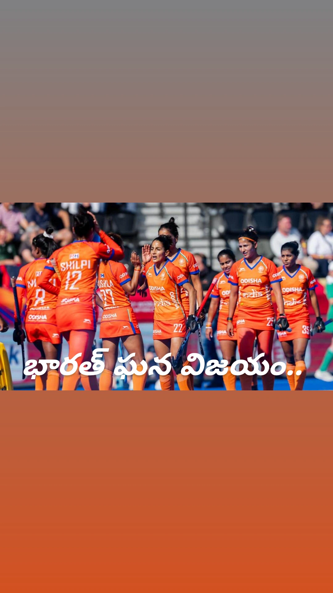

ప్రపంచ హాకీ వేదికపై భారత మహిళల జట్టు మరోసారి చరిత్ర సృష్టించింది. FIH ఉమెన్స్ హాకీ వరల్డ్ కప్లో జర్మనీపై భారత మహిళల జట్టు 3-1తో అద్భుతమైన విజయం సాధించింది. ఈ విజయంతో భారత్ టోర్నీలో ఐదో స్థానాన్ని సొంతం చేసుకుంది.
ఈ ఫలితం భారత మహిళల హాకీ చరిత్రలో ఎంతో ప్రత్యేకమైనది. 1974లో జరిగిన తొలి మహిళల హాకీ వరల్డ్ కప్లో భారత్ నాలుగో స్థానంలో నిలిచింది. ఆ తర్వాత వరల్డ్ కప్లో భారత్కు లభించిన అత్యుత్తమ ఫినిష్ ఇదే కావడం విశేషం. దాదాపు 52 ఏళ్ల తర్వాత భారత జట్టు మరోసారి టాప్-5లో నిలిచింది. 1
జర్మనీతో జరిగిన 5వ–6వ స్థానాల వర్గీకరణ మ్యాచ్ ప్రారంభం నుంచే ఉత్కంఠగా సాగింది. ఇరు జట్లు మొదటి రెండు క్వార్టర్లలో డిఫెన్స్కు ఎక్కువ ప్రాధాన్యత ఇచ్చాయి. జర్మనీకి కొన్ని అవకాశాలు లభించినప్పటికీ భారత డిఫెన్స్ వాటిని సమర్థంగా అడ్డుకుంది.
మొదటి 30 నిమిషాల ఆట పూర్తయ్యే సమయానికి ఇరు జట్లూ ఒక్క గోల్ కూడా చేయలేకపోయాయి. దీంతో హాఫ్ టైమ్కు స్కోరు 0-0గా నిలిచింది. మ్యాచ్ రెండో అర్ధభాగంలోనే అసలు కథ మారిపోయింది. 2
మూడో క్వార్టర్ ప్రారంభమైన తర్వాత భారత క్రీడాకారిణులు ఆట వేగాన్ని పూర్తిగా మార్చేశారు. 43వ నిమిషంలో ఇషికా అద్భుతమైన ఫీల్డ్ గోల్ సాధించి భారత్కు 1-0 ఆధిక్యాన్ని అందించింది.
ఆ గోల్ వచ్చిన వెంటనే భారత్ మరింత ఉత్సాహంతో ఆడింది. 44వ నిమిషంలో లభించిన పెనాల్టీ కార్నర్ను నవనీత్ కౌర్ గోల్గా మలిచింది. దీంతో భారత్ 2-0 ఆధిక్యంలోకి వెళ్లింది. 3
భారత్కు వచ్చిన ఆధిక్యంతో జట్టు ఆట మరింత దూకుడుగా మారింది. 47వ నిమిషంలో నవనీత్ కౌర్ మరోసారి గోల్ సాధించారు. ఈసారి ఫీల్డ్ గోల్తో జట్టు ఆధిక్యాన్ని 3-0కి పెంచారు.
నవనీత్ కౌర్ ఈ మ్యాచ్లో రెండు గోల్స్ సాధించడం ద్వారా భారత విజయానికి ప్రధాన కారణాల్లో ఒకరిగా నిలిచారు. ఆమె అద్భుత ప్రదర్శనకు తోడు ఇషికా గోల్ కూడా భారత్ను చారిత్రాత్మక విజయానికి చేరువ చేసింది. 4
మ్యాచ్ చివరి దశలో జర్మనీ స్కోరు తగ్గించే ప్రయత్నం చేసింది. 59వ నిమిషంలో లిన్ క్రింగ్స్ ఫీల్డ్ గోల్ సాధించి జర్మనీకి ఒక గోల్ అందించారు.
అయితే అప్పటికే భారత్ 3-0 ఆధిక్యంలో ఉండటంతో ఆ గోల్ ఫలితాన్ని మార్చలేకపోయింది. చివరకు భారత్ 3-1తో విజయాన్ని నమోదు చేసి ఐదో స్థానాన్ని ఖాయం చేసుకుంది. 5
ఈ విజయం భారత మహిళల హాకీ జట్టుకు ఎంతో ప్రత్యేకమైనది. 1974లో తొలి మహిళల హాకీ వరల్డ్ కప్లో భారత్ నాలుగో స్థానంలో నిలిచింది. ఇప్పుడు 2026 వరల్డ్ కప్లో ఐదో స్థానంలో నిలవడం ద్వారా మరోసారి చరిత్రలో తన పేరును నమోదు చేసుకుంది.
దాదాపు ఐదు దశాబ్దాల తర్వాత వరల్డ్ కప్లో భారత మహిళల జట్టు టాప్-5లో నిలవడం ఆటగాళ్లకు, అభిమానులకు ఎంతో గర్వకారణంగా మారింది. 6
ఈ టోర్నీలో భారత మహిళల జట్టు ఎన్నో సవాళ్లను ఎదుర్కొంది. ముఖ్యమైన మ్యాచ్ల్లో ఒత్తిడిని తట్టుకుని ముందుకు సాగిన జట్టు చివరకు జర్మనీపై కీలక విజయాన్ని సాధించింది.
ముఖ్యంగా తొలి అర్ధభాగంలో గోల్ చేయలేకపోయినా భారత ఆటగాళ్లు నిరాశ చెందలేదు. రెండో అర్ధభాగంలో దూకుడును పెంచి కేవలం కొన్ని నిమిషాల వ్యవధిలో మూడు గోల్స్ సాధించడం జట్టు మానసిక బలాన్ని చూపించింది.
వరల్డ్ కప్లో ఐదో స్థానంతో ముగించడం భారత మహిళల హాకీకి కొత్త ఉత్సాహాన్ని ఇచ్చే ఫలితంగా భావించవచ్చు. అంతర్జాతీయ స్థాయిలో భారత మహిళల హాకీ జట్టు క్రమంగా తన స్థాయిని పెంచుకుంటూ వస్తోంది.
జర్మనీ వంటి బలమైన జట్టుపై 3-1తో విజయం సాధించడం భారత ఆటగాళ్లలో ఆత్మవిశ్వాసాన్ని మరింత పెంచే అవకాశం ఉంది. ముఖ్యంగా ఇషికా, నవనీత్ కౌర్ గోల్స్ మ్యాచ్ను భారత్ వైపు తిప్పడంలో కీలక పాత్ర పోషించాయి.
భారత మహిళల జట్టు చారిత్రాత్మక విజయంతో దేశవ్యాప్తంగా హాకీ అభిమానుల్లో ఆనందం నెలకొంది. 1974 తర్వాత అత్యుత్తమ వరల్డ్ కప్ ఫినిష్ సాధించడం భారత మహిళల హాకీ భవిష్యత్తుపై ఆశలను మరింత పెంచింది.
మొత్తంగా చూస్తే.. జర్మనీపై 3-1 విజయం, ఐదో స్థానం, 1974 తర్వాత అత్యుత్తమ వరల్డ్ కప్ ప్రదర్శన.. ఇవన్నీ భారత మహిళల హాకీ జట్టు సాధించిన గొప్ప విజయాల్లో ఒకటిగా నిలిచాయి. ఈ టోర్నీలో చూపించిన పోరాట పటిమతో భారత జట్టు అభిమానుల ప్రశంసలు అందుకుంది.